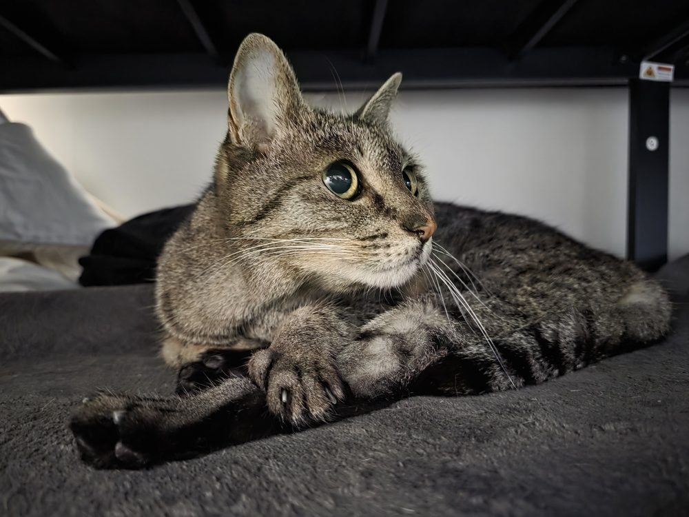
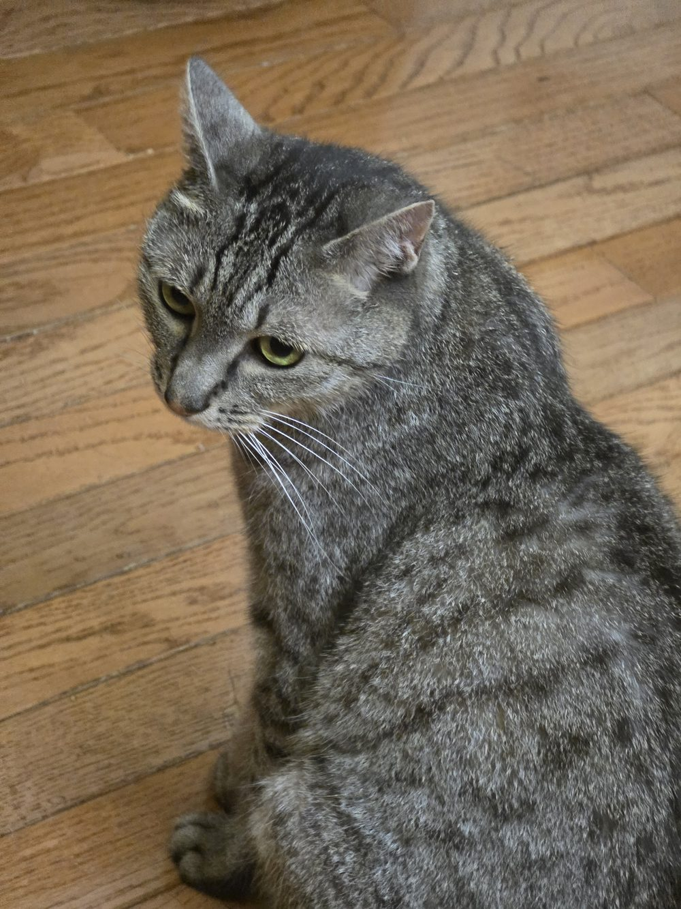
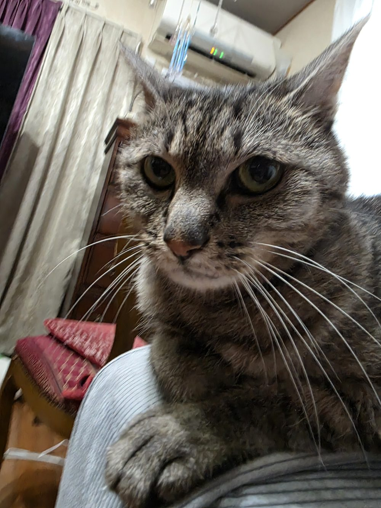

旅は、人の選択肢を増やす
大学時代に旅行サークルを作って、300名規模まで育てました。やっていたことは単純で、知らない場所へみんなで行くことです。でも、行くたびに「こういう街があるのか」「こういう生き方もあるのか」という発見がありました。

知らない街の日常や、小さな路線の先にある暮らし。そういう場所に旅の理由を見つけるのが好きで、その旅を仕事として形にしようとしています。
佐々木健仁（たけ）｜神奈川県相模原市
神奈川県相模原市を拠点にする個人事業主。携帯キャリアの販売応援スタッフの事業を収益基盤にしながら、将来は全国各地で観光事業を企画・プロデュースする仕事を本業にしていくため、地域・不動産・発信の現場を広げています。仕組みで参加のハードルを下げ、人の選択肢を増やすことがテーマです。旅行を、お金や情報の壁で諦める若者を減らしたい。アオハル旅の発信を入口に、実用的な旅の情報を届けながら、地域の観光企画へ。将来は、宿泊や体験を予約できる場所まで育てていく構想です。



一緒に暮らしている猫のアッシュ。
大学時代に旅行サークルを作って、300名規模まで育てました。やっていたことは単純で、知らない場所へみんなで行くことです。でも、行くたびに「こういう街があるのか」「こういう生き方もあるのか」という発見がありました。
僕の価値観は「余裕 → 自由 → 主体性 → 個性・熱中」という順番でつながっています。
将来作りたいのは、全国各地で観光事業を企画・プロデュースする会社です。旅行会社のように旅を売る側ではなく、地域の体験や、人が訪れる仕組みそのものを考える側にいたいと思っています。
最終的に目指す姿
全国の地域と旅をつなぐ、観光事業の会社
地域観光の企画・プロデュースと集客、その先の宿泊・体験の予約までを、一つの構造として育てています。いまの仕事は独立した6つの事業ではなく、この形に向けた役割分担です。
宿や地域の観光商品の企画、地域PR、事業者との連携。地域の事業者が続けられる形で、宿泊・飲食・体験へ人が流れる仕組みを作ります。将来の本業として、最優先で育てています。
「知らなかった日本に、出会う。」Instagramを中心に、地域の魅力と実用的な旅行情報を届ける若者向けローカル旅メディア。将来の予約への導線にもつなげます。
携帯キャリアの催事における販売応援スタッフの事業。現在の収益基盤として、管理や運営を仕組み化しながら維持しています。合同会社イプシロン・ラボでは営業担当として、提携企業の営業支援も行っています。
居住用「住まいの見立て」と、東京で最初のオフィスを探す人のための「はじめてのオフィス。」の2ブランドで、住まいとオフィスの紹介を行っています。実務は提携先と分担し、本人の工数を下げて運営しています。
自分の事業にも、地域事業者への支援にも活用する能力。地域事業者向けのDX伴走（予約受付・LINE公式アカウント・決済まわりの整備、記帳代行などの業務支援）と、観光PRのための動画編集を含みます。
地域おこし協力隊への応募は、この構造を一地域で実地に育てるための足場と位置づけています。
アオハル旅のInstagram @aoharutabi